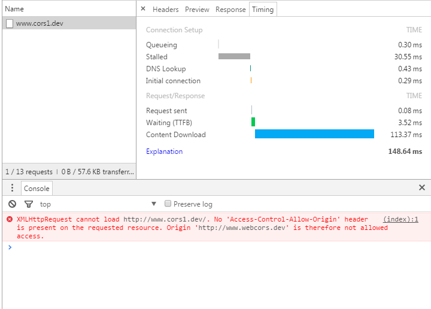

跨域请求触发浏览器复杂请求
在做webapp的项目 常用的技术架构是 angularjs+api , 在调用api 的时候一般都是跨域请求
手机端的高级浏览器对跨域的支持很好，但是在跨域的情况下还有需求意想不到的情况
发送请求的时候 设置不同的响应头会导致浏览器不同的情况，发送一些头会导致浏览器发送一个复杂请求
复杂请求中 会先发送一个 OPTIONS 的请求，这个请求并不是开发者代码中的主动发出 而是浏览器发送的
在 移动3G 的网络情况下 ， OPTIONS 的响应数度很慢 虽然不会超时(60s)OPTIONS 是一个 预请求 , 目的是先请求下这个接口是否可请求 有权限读取，这是一个好的设计
但是 从另一面来讲，多发送一个请求 性能上有损失，移动3G在对OPTIONS请求的传递响应巨慢
js原生发送一个http请求
ajax对象1
var xhr = new XMLHttpRequest();
开启连接口1
2
3
4xhr.open(method, url, async)
method 请求方法
url 请求地址
async 是否异步
设置请求头1
xhr.setRequestHeader(key, val)
发送1
2xhr.send(data)
data 如果是POST请求 data 就是body体的内容 其他情况为 null 就ok 了
设置响应1
2
3
4
5
6
7xhr.onreadystatechange = function () {
if (xhr.readyState == 4) {
if (xhr.status == 200) { // http 响应头的code
//
}
}
}
一个原生ajax源码封装
1 | window.ajax = (function () { |
什么是跨域
页面发送一个ajax请求的时候
当前发送请求方叫做 Origin 叫做域 ，当请求一个资源的时候 资源的HOST就是他的域
比如我们在 baidu.com/login.html 页面请求 baidu.com/list.php 这个资源 这里的源 就是域名 www.baidu.com
如果请求其他的域名下的资源 www.360.com/corn.php 这个时候就存在跨域问题
具体的跨域情况如下：
如何跨域
如下图：

对象 XMLHttpRequest 报错了
请求是从域 http://www.webcors.dev/ 发送到 域 http://www.cors1.dev ，这是一个明显的跨域问题
但是看图我们可以看出来 其实这个请求已经发出去了，服务器也是将结果返回了，Content Download 这个是内容下载时间
但是浏览器并没有将这个内容显示给我们 也就是说这是浏览器中的安全机制
如何才能跨域 ？ 接着看这个错误1
No 'Access-Control-Allow-Origin' header is present on the requested resource.
在响应中没有找到 Access-Control-Allow-Origin 这个响应头
这说明我们需要在服务端设置响应头， 浏览器通过这个 HTML5 中的相应头 来决定这个跨域请求的数据是否有权显示这个内容
其实跨域这块有几个地方是需要服务器添加响应头才能实现的，浏览器是需要通过读取响应头来决定是否显示的
Access-Control-Allow-Origin * 声名哪些源是允许跨域请求的 表示任何域都可以请求 你也可以指定一个允许的域名 只能指定一个不能写多个 .baidu.com 这种的泛解析也是不行的 他是完全匹配
Access-Control-Allow-Headers Origin,Accept,... 声明哪些请求头是可以跨域请求的
Access-Control-Allow-Method GET,POST,HEAD 声明跨域请求允许的方法
Access-Control-Allow-Credentials true 跨域时候是否允许传递 cookie 当使用这个参数的时候 Access-Control-Allow-Origin 这个参数是不能设置成 * 的
服务端如何设置跨域
举例
apache httpd.conf1
2
3
4
5
6
7
8<Directory />
Options FollowSymLinks
AllowOverride All
Require all granted
Header set Access-Control-Allow-Origin *
Header set Access-Control-Allow-Method GET,POST,HEAD
Header set Access-Control-Allow-Origin Origin,Content-Type,Accept,X-Requested-With
<Directory>
nginx http.conf
1 | location / { |
复杂请求
在上面讲到的跨域请求问题，这样的背景下 有时候你会发现 你只发出去了一个请求 但是在
浏览器里面能看到发出去的却是两个 第一个是OPTIONS请求 第二个才是你要发送的
出现这个现象是浏览器的一个 简单请求 复杂请求 的一个判断，复杂请求模式下 浏览器在发送请求前先
发送一个 OPTIONS 形式的 预请求 ， 后面才会发送真正的请求
浏览器是如何来区分 是 复杂请求 还是 简单请求的呢？
简单请求：
HTTP请求方式是 下列的一种1
2
3HEAD
GET
POST
HTTP请求头仅包含下列选项1
2
3
4
5
6
7
8
9Accept
Accept-Language
Content-Language
Last-Event-ID
Content-Type
Content-Type 的值只能是下列的一种
application/x-www-form-urlencoded
multipart/form-data
text/plain
任何不满足上面要求的都会被当做复杂请求
举例如下1
2
3
4
5
6
7
8
9
10
11var url = "http://www.cors1.dev";
ajax.run({
url : url,
method : 'get',
headers : {
"Content-Type" : "application/json"
},
success : function (data) {
console.log(data);
}
});
虽然是 GET 请求但是 在请求头的 Content-Type 设置的并不是规定的三个的之一
浏览器会当作复杂请求来处理
angularjs 如何设置 Content-Type
angularjs 如何发送一个ajax请求
1 | <div ng-app="app" ng-controller="demoController"> |
angularjs 里面可以设置 请求头
其中 如果没设置 data数据的情况下 头信息设置 Content-Type 无效